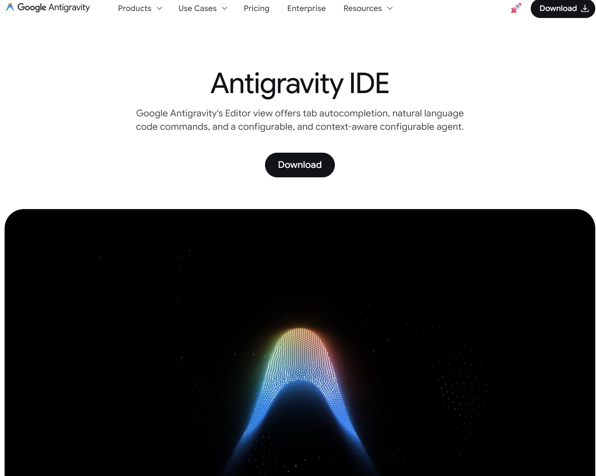
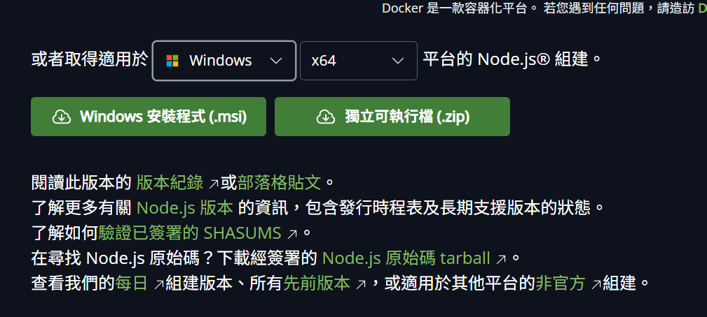
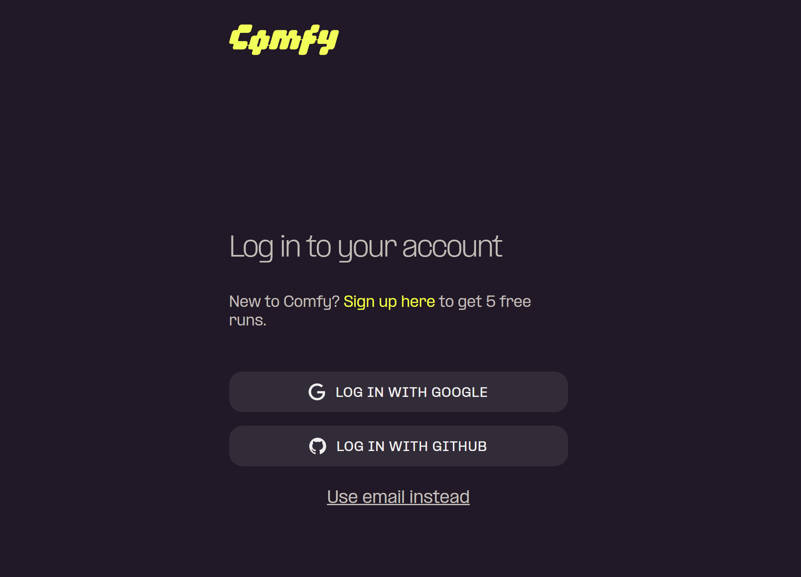
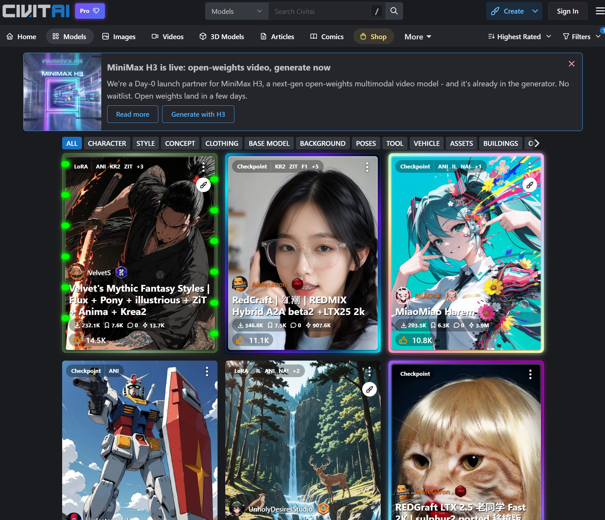
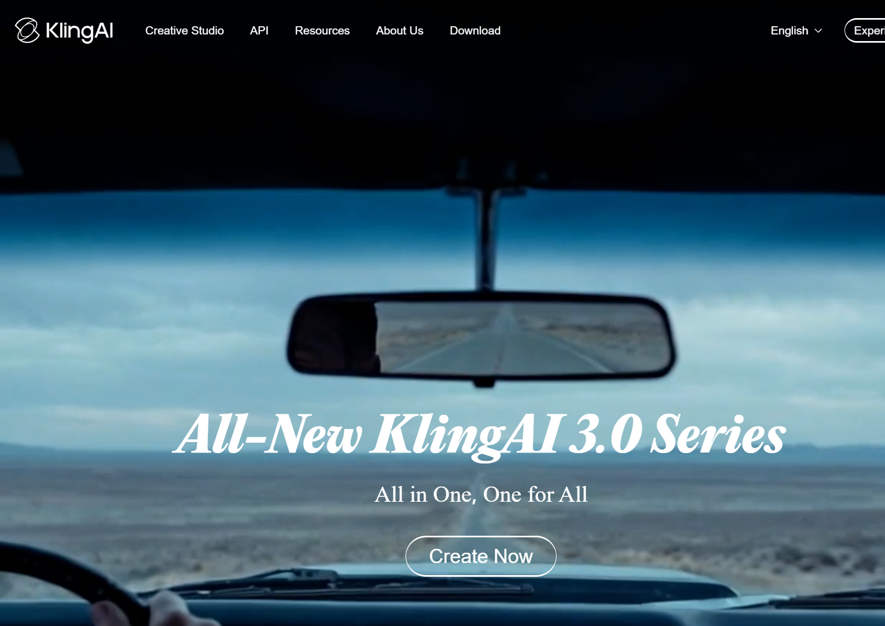
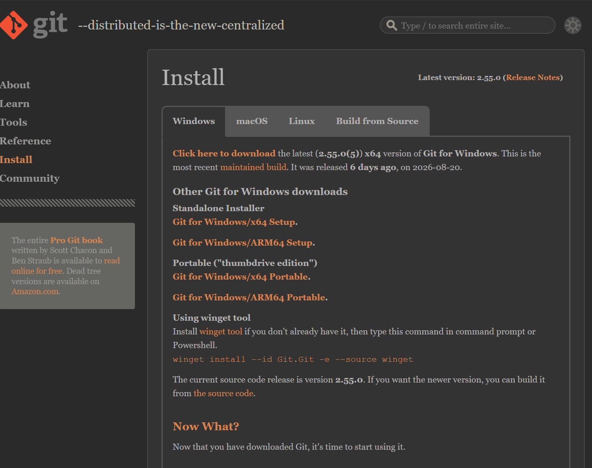
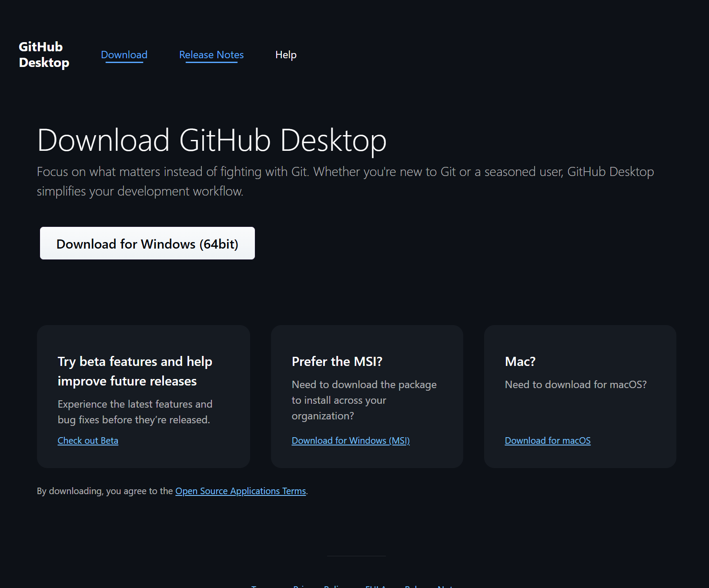

準備工具清單
- 本地神級助理：Google Antigravity IDE 是你的本地 IDE Agent (數位工作室 / 頂級畫室) 數位實習生。 👉 下載連結
📸 【截圖佔位】
說明：請截取 Antigravity IDE 官方下載首頁與按鈕
圖檔命名：ch0_antigravity_ide.png
💡 為什麼核心引擎選用 Gemini Pro 3.1？(最符合經濟成本)
- 1. 月費與基本容量比較 (以 3000 台幣/月 預算為基準)：
Gemini Pro 3.1 提供極寬裕免費額度，且容量高達 200 萬 Token (約 2000 張圖)；訂閱制 (如 Copilot/ChatGPT Plus) 雖月費低於預算，但記憶力被限制在 8K~128K (極限約 8~120 張圖)，面對大型專案會強制失憶；Claude 等 API 則無免費額度。 - 2. 單次處理費用 (以 API 消耗 Token 計算)：
AI 會「每次重新讀取所有背景資料」。處理一張圖約消耗數千 Token。
Gemini Pro 3.1 在免費額度內等於 $0；而 Claude 等 API 讀取一張圖約 0.2 ~ 0.5 台幣，且隨對話變長，過路費會像滾雪球增加。 - 3. 「3000 台幣預算」的單月處理極限對比：
若專案有 100 張圖並來回修改 20 次，會產生100 × 20 = 2000次疊加超大讀取。
Copilot 訂閱制 會在首輪對話就塞滿 128K 強制失憶；Claude 等 API (3000預算) 面對大量圖片極易在半個月燒光；Gemini Pro 3.1 則可帶來數百萬次的超大處理容量。
- 1. 月費與基本容量比較 (以 3000 台幣/月 預算為基準)：
- 外掛底層引擎：Node.js (快遞引擎) 是下載擴充外掛 (SKILL) 的必備引擎。 👉 下載連結
📸 【截圖佔位】
說明：請截取 Node.js 官網的 LTS 下載按鈕位置
圖檔命名：ch0_nodejs_install.png
*(⚠️ 避坑：進入官網後，Windows 系統請直接下載 Windows Installer (.msi) 版本，Mac 系統請下載 macOS Installer (.pkg) 版本，不需要透過 Docker 安裝！)* - 素材檢視工具：Adobe Photoshop (或 Photopea) 是開啟 PSD 素材必備軟體。 👉 網頁版連結
📸 【截圖佔位】
說明：請截取 Photopea 網頁首頁或 Photoshop 開啟畫面
圖檔命名：ch0_photopea.png - 雲端生圖平台：Comfy Cloud 帳號是像心智圖一樣連連看的雲端生圖平台。 👉 註冊連結
📸 【截圖佔位】
說明：請截取 Comfy Cloud 註冊/登入畫面
圖檔命名：ch0_comfycloud.png
- 模型擴充圖庫：Civitai 帳號是下載進階 LoRA 模型必備。 👉 註冊連結
📸 【截圖佔位】
說明：請截取 Civitai 註冊/登入畫面
圖檔命名：ch0_civitai.png
- 動態影片生成：Kling AI / Luma 帳號是生成最終動態影片必備。 👉 Kling / Luma
📸 【截圖佔位】
說明：請截取 Kling AI 註冊/登入畫面
圖檔命名：ch0_kling_luma.png
- 專案時空機：Git & GitHub Desktop 讓你體驗無極限的 Ctrl+Z (Mac 為 Cmd+Z)
時空機（也就是專案版控）。 👉 Git 下載 / Desktop 下載
📸 【截圖佔位】
說明：請截取 Git 下載頁面的 Windows/Mac 下載按鈕
圖檔命名：ch0_git_install.png
📸 【截圖佔位】
說明：請截取 GitHub Desktop 官網下載按鈕
圖檔命名：ch0_github_desktop.png
*(⚠️ 避坑：Git 安裝時會有很多選項，請一路按 Next 保持預設即可！)* - 實作測試資料：課程素材包內含測試用 PSD 檔與參考草圖，請解壓縮至桌面。 👉 下載連結

實作時間：10 分鐘
- 打開下方的 【終端機
(Terminal)】 ➔ 輸入：
npx skills find comfy搜尋 ➔ 接著輸入：npx -y skills add mckruz/comfyui-expert@comfyui-prompt-engineer下載安裝。📸 【截圖佔位】
說明：請截取編輯器底部的「終端機 (Terminal)」位置，以及輸入 npx skills... 後的畫面
圖檔命名：ch1_npx_install.png

檢查左側檔案總管，你會發現
你已經成功把世界級的提示詞大師聘請到你的專案中了！
.agents/skills/ 內多出了一個 comfyui-prompt-engineer
資料夾。你已經成功把世界級的提示詞大師聘請到你的專案中了！
避坑 TIP：
- 什麼是 npx？
npx並非每台電腦都有，它是 Node.js 附帶的「快遞安裝精靈」。安裝 Node.js 後就會自動擁有，無腦複製貼上即可。 - 指令找不到： 若打 npx 後顯示找不到指令，代表你忘記先安裝 Node.js，請立刻回到第 0 章完成安裝！
實作時間：10 分鐘
- 打開 【GitHub Desktop】 ➔ 點擊左上角的 【File (檔案)】 選單 ➔ 選擇 【Add Local Repository... (加入本機時光機基地)】 ➔ 選擇你現在的專案資料夾。
- 點擊左上角的 【History (歷史紀錄)】 標籤。
📸 【截圖佔位】
說明：請截取 GitHub Desktop 左下角的「Commit」區塊，以及上方的「Push origin」按鈕
圖檔命名：ch2_github_desktop.png

🚀 確認成果：未來如果你想手動回到某個版本，只要對著那條紀錄按右鍵選擇「Revert (倒帶)」就可以了，完全不用打任何一行程式碼！
老闆要我發新品貼文，我需要先請「毒舌總監」檢查構圖，再請「行銷小編」寫文案。難道我要開兩個視窗，自己複製貼上當傳聲筒嗎？快精神分裂了！

👨
實作時間：25 分鐘
📸 【截圖佔位】
說明：請截取 ComfyCloud 工作流中「上傳圖片 (Load Image)」節點與「執行 (Queue Prompt)」按鈕位置
圖檔命名：
說明：請截取 ComfyCloud 工作流中「上傳圖片 (Load Image)」節點與「執行 (Queue Prompt)」按鈕位置
圖檔命名：
ch7_comfycloud_ui.png

體會當你加上「強制描圖紙」後，AI 乖乖按照你要的姿勢繪圖的強大控制力！
避坑 TIP：
- 迷信高數值： 無腦拉高 Steps 到 100 不會更好看，只會產生油畫破圖感。
- 迷信 Seed 鎖定長相： Seed 只能鎖構圖基底。同個模特換姿勢需要 ControlNet，完美一致則需進階 FaceID 或 LoRA 節點！
老闆要我寫一篇「具備電影感」的銀河系挑染造型文案，我用了 ChatGPT 寫出來的都是「這個髮色真的很棒、很時尚」這種廢話！

👨
(心想：換個模型試試看...)

👨
原來不同的 AI 模型有不同的專長！如果選錯模型，就像請數學教授來寫詩一樣，難怪寫不出好文案！

👨
實作時間：5 分鐘
- 開啟 【Start/End Frames】。
- 首幀上傳「銀河系挑染」，尾幀上傳「龐克粉紅短髮」(需確保角度一致)。
- 提示詞輸入：
"The model is transforming clothes smoothly"➔ 點擊 【Generate】。📸 【截圖佔位】
說明：請截取 Kling AI 介面中上傳「首幀 (Start Frame)」與「尾幀 (End Frame)」的區域
圖檔命名：ch8_video_ui.png

⚠️ 避坑 TIP (新手大坑)：首尾幀的圖片，光影和人物比例絕對不能差太多！否則 AI 會不知道怎麼補中間的空間過渡，導致人物在中途像異形一樣融化變異！
🎉 見證最終成果：你會得到一段極度逼真的動態換髮色展演！這就是 AI 時代一人團隊的恐怖生產力！